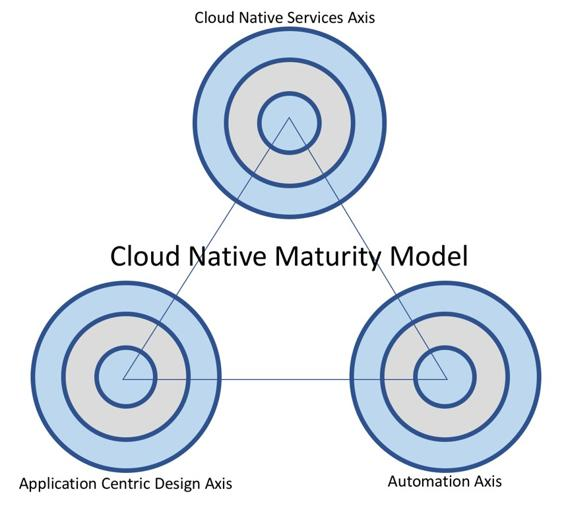

Summary
This brings us to the last section of this book, and we have covered lots of ground right from the beginning. So, let's go back a bit and reflect on what we have learned through, the various chapters.
We started by defining what it actually means to be cloud native, as that was the core part of laying the foundation of the entire discussion in the rest of the chapters. So, as a quick refresher, the CNMM revolves around three main axes:
So, every customer will have a varying degree of maturity of across all of these axes, but essentially, they can still be cloud native:

After this, we went into the details of the Cloud Adoption Framework and what it means from multiple different perspectives, including business, people, governance, platform, security, and operations. This eventually led us to the next important set of topics revolving around the essence of microservices, serverless, and how to build applications in the cloud using the 12-factor application framework. We then also looked at the cloud ecosystem, which is comprised of technology and consulting partners, as well as different software licensing and procurement models including marketplaces, bring-your-licenses, and so on. With all of these general concepts clearly understood, we started to take the onion-peeling approach and dived into the specifics of how you think about scalability, availability, security, cost management, and operational excellence, which are very important to understand from a cloud perspective, and how this is similar or different from the existing on-premise models.
After all of these concepts were clear, it was time to get our hands dirty by diving right into the specifics of the top three leading cloud providers, including Amazon WebServices, Microsoft Azure, and Google Cloud Platform. In each of these sections, we looked at their capabilities and differentiation based on the earlier described CNMM model. We looked at every cloud provider's key service offering, based on CNMM axis-1, followed by developing and deploying a serverless microservice based on CNMM axis-2, and finally concluded with automation/DevOps possibilities based on CNMM axis-3. This exercise gave us a deeper insight into the terms of all cloud providers and their relative comparisons as well.
Finally, in this chapter, we looked at a couple of aspects. One of the main was the top seven technology trends, which we can expect to see evolve in the next three years. This will help us look at not just current capabilities, but even plan for the future. After, we dived in to see the impact of the cloud on enterprises and how they are embracing the change. In the same section, we also learned about the new IT roles which we have seen evolve due to the cloud becoming mainstream in enterprises.
With this, we came to a conclusion, and if there's one thing you want to take away from this entire book, then that will be – "Cloud is the new normal, and if you have to harness the full power of it, then there's no better way than being fully committed and going cloud native!"